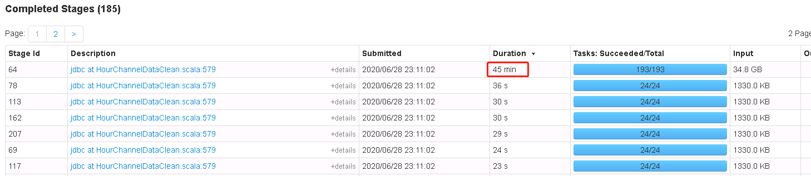
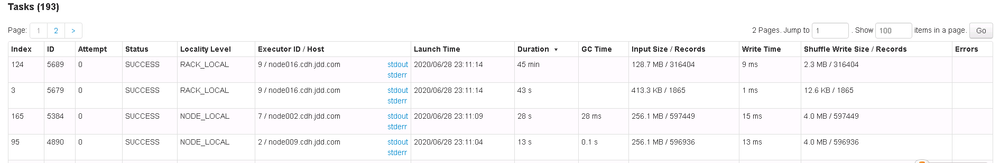
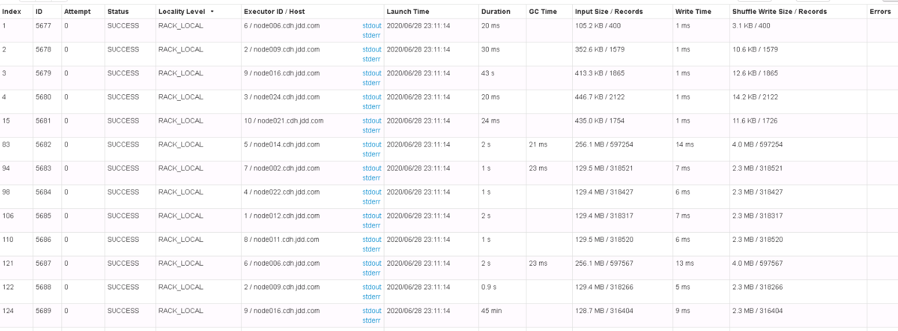

数据本地性对job的执行时间影响也很大

可以看到的是，有一个stage执行时间很长输入数据很大。

但是从tasks看，有一个task与其它tasks输入数据量差别并不大，只是Locality Level变为了RACK_LOCAL
如果是本地性级别的问题，可以通过调试spark.locality.wait，同时可以调试spark.locality.wait.node进行优化。
但是查看了任务的执行记录，其它RACK_LOCAL的任务执行也并不是都慢。

看到stderr中log间隔了45分钟
20/06/28 23:11:14 INFO executor.Executor: Running task 124.0 in stage 64.0 (TID 5689)
20/06/28 23:11:14 INFO rdd.HadoopRDD: Input split: hdfs://nameservice/data/dw/dw_wf_game.db/uic_user/000000_0_copy_11:0+423255
20/06/28 23:11:14 INFO rdd.HadoopRDD: Input split: hdfs://nameservice/data/dw/dw_dmp.db/wf_user_basic_data/s_app_key=wf_game/p_day=20200627/part-00025-83cc5e07-063e-42e9-b671-46b654d94329.c000:268435456+134907454
20/06/28 23:11:57 INFO executor.Executor: Finished task 3.0 in stage 64.0 (TID 5679). 1648 bytes result sent to driver
20/06/28 23:56:03 WARN hdfs.BlockReaderFactory: I/O error constructing remote block reader.
java.net.SocketTimeoutException: 60000 millis timeout while waiting for channel to be ready for read. ch : java.nio.channels.SocketChannel[connected local=/172.16.1.36:31037 remote=/10.107.32.13:50010]
at org.apache.hadoop.net.SocketIOWithTimeout.doIO(SocketIOWithTimeout.java:164)
at org.apache.hadoop.net.SocketInputStream.read(SocketInputStream.java:161)
at org.apache.hadoop.net.SocketInputStream.read(SocketInputStream.java:131)
at org.apache.hadoop.net.SocketInputStream.read(SocketInputStream.java:118)
at java.io.FilterInputStream.read(FilterInputStream.java:83)
at org.apache.hadoop.hdfs.protocolPB.PBHelper.vintPrefixed(PBHelper.java:2272)
at org.apache.hadoop.hdfs.RemoteBlockReader2.newBlockReader(RemoteBlockReader2.java:430)
at org.apache.hadoop.hdfs.BlockReaderFactory.getRemoteBlockReader(BlockReaderFactory.java:881)
at org.apache.hadoop.hdfs.BlockReaderFactory.getRemoteBlockReaderFromTcp(BlockReaderFactory.java:759)
at org.apache.hadoop.hdfs.BlockReaderFactory.build(BlockReaderFactory.java:376)
at org.apache.hadoop.hdfs.DFSInputStream.blockSeekTo(DFSInputStream.java:652)
at org.apache.hadoop.hdfs.DFSInputStream.seekToBlockSource(DFSInputStream.java:1598)
at org.apache.hadoop.hdfs.DFSInputStream.readBuffer(DFSInputStream.java:852)
at org.apache.hadoop.hdfs.DFSInputStream.readWithStrategy(DFSInputStream.java:888)
at org.apache.hadoop.hdfs.DFSInputStream.read(DFSInputStream.java:937)
at java.io.DataInputStream.read(DataInputStream.java:149)
at org.apache.hadoop.mapreduce.lib.input.UncompressedSplitLineReader.fillBuffer(UncompressedSplitLineReader.java:62)
at org.apache.hadoop.util.LineReader.readDefaultLine(LineReader.java:216)
at org.apache.hadoop.util.LineReader.readLine(LineReader.java:174)
at org.apache.hadoop.mapreduce.lib.input.UncompressedSplitLineReader.readLine(UncompressedSplitLineReader.java:94)
at org.apache.hadoop.mapred.LineRecordReader.next(LineRecordReader.java:248)
at org.apache.hadoop.mapred.LineRecordReader.next(LineRecordReader.java:48)
at org.apache.spark.rdd.HadoopRDD{% math %}anon$1.getNext(HadoopRDD.scala:266)
at org.apache.spark.rdd.HadoopRDD{% endmath %}anon$1.getNext(HadoopRDD.scala:203)
at org.apache.spark.util.NextIterator.hasNext(NextIterator.scala:73)
at org.apache.spark.InterruptibleIterator.hasNext(InterruptibleIterator.scala:37)
at scala.collection.Iterator{% math %}anon$11.hasNext(Iterator.scala:408)
at scala.collection.Iterator{% endmath %}anon$11.hasNext(Iterator.scala:408)
at scala.collection.Iterator{% math %}anon$11.hasNext(Iterator.scala:408)
at org.apache.spark.sql.catalyst.expressions.GeneratedClass$GeneratedIterator.processNext(Unknown Source)
at org.apache.spark.sql.execution.BufferedRowIterator.hasNext(BufferedRowIterator.java:43)
at org.apache.spark.sql.execution.WholeStageCodegenExec{% endmath %}anonfun$8{% math %}anon$1.hasNext(WholeStageCodegenExec.scala:395)
at scala.collection.Iterator{% endmath %}anon$11.hasNext(Iterator.scala:408)
at org.apache.spark.shuffle.sort.BypassMergeSortShuffleWriter.write(BypassMergeSortShuffleWriter.java:148)
at org.apache.spark.scheduler.ShuffleMapTask.runTask(ShuffleMapTask.scala:96)
at org.apache.spark.scheduler.ShuffleMapTask.runTask(ShuffleMapTask.scala:53)
at org.apache.spark.scheduler.Task.run(Task.scala:108)
at org.apache.spark.executor.Executor$TaskRunner.run(Executor.scala:335)
at java.util.concurrent.ThreadPoolExecutor.runWorker(ThreadPoolExecutor.java:1149)
at java.util.concurrent.ThreadPoolExecutor$Worker.run(ThreadPoolExecutor.java:624)
at java.lang.Thread.run(Thread.java:748)
20/06/28 23:56:03 WARN hdfs.DFSClient: Failed to connect to /10.107.32.13:50010 for block, add to deadNodes and continue. java.net.SocketTimeoutException: 60000 millis timeout while waiting for channel to be ready for read. ch : java.nio.channels.SocketChannel[connected local=/172.16.1.36:31037 remote=/10.107.32.13:50010]
java.net.SocketTimeoutException: 60000 millis timeout while waiting for channel to be ready for read. ch : java.nio.channels.SocketChannel[connected local=/172.16.1.36:31037 remote=/10.107.32.13:50010]
at org.apache.hadoop.net.SocketIOWithTimeout.doIO(SocketIOWithTimeout.java:164)
at org.apache.hadoop.net.SocketInputStream.read(SocketInputStream.java:161)
at org.apache.hadoop.net.SocketInputStream.read(SocketInputStream.java:131)
at org.apache.hadoop.net.SocketInputStream.read(SocketInputStream.java:118)
at java.io.FilterInputStream.read(FilterInputStream.java:83)
at org.apache.hadoop.hdfs.protocolPB.PBHelper.vintPrefixed(PBHelper.java:2272)
at org.apache.hadoop.hdfs.RemoteBlockReader2.newBlockReader(RemoteBlockReader2.java:430)
at org.apache.hadoop.hdfs.BlockReaderFactory.getRemoteBlockReader(BlockReaderFactory.java:881)
at org.apache.hadoop.hdfs.BlockReaderFactory.getRemoteBlockReaderFromTcp(BlockReaderFactory.java:759)
at org.apache.hadoop.hdfs.BlockReaderFactory.build(BlockReaderFactory.java:376)
at org.apache.hadoop.hdfs.DFSInputStream.blockSeekTo(DFSInputStream.java:652)
at org.apache.hadoop.hdfs.DFSInputStream.seekToBlockSource(DFSInputStream.java:1598)
at org.apache.hadoop.hdfs.DFSInputStream.readBuffer(DFSInputStream.java:852)
at org.apache.hadoop.hdfs.DFSInputStream.readWithStrategy(DFSInputStream.java:888)
at org.apache.hadoop.hdfs.DFSInputStream.read(DFSInputStream.java:937)
at java.io.DataInputStream.read(DataInputStream.java:149)
at org.apache.hadoop.mapreduce.lib.input.UncompressedSplitLineReader.fillBuffer(UncompressedSplitLineReader.java:62)
at org.apache.hadoop.util.LineReader.readDefaultLine(LineReader.java:216)
at org.apache.hadoop.util.LineReader.readLine(LineReader.java:174)
at org.apache.hadoop.mapreduce.lib.input.UncompressedSplitLineReader.readLine(UncompressedSplitLineReader.java:94)
at org.apache.hadoop.mapred.LineRecordReader.next(LineRecordReader.java:248)
at org.apache.hadoop.mapred.LineRecordReader.next(LineRecordReader.java:48)
at org.apache.spark.rdd.HadoopRDD{% math %}anon$1.getNext(HadoopRDD.scala:266)
at org.apache.spark.rdd.HadoopRDD{% endmath %}anon$1.getNext(HadoopRDD.scala:203)
at org.apache.spark.util.NextIterator.hasNext(NextIterator.scala:73)
at org.apache.spark.InterruptibleIterator.hasNext(InterruptibleIterator.scala:37)
at scala.collection.Iterator{% math %}anon$11.hasNext(Iterator.scala:408)
at scala.collection.Iterator{% endmath %}anon$11.hasNext(Iterator.scala:408)
at scala.collection.Iterator{% math %}anon$11.hasNext(Iterator.scala:408)
at org.apache.spark.sql.catalyst.expressions.GeneratedClass$GeneratedIterator.processNext(Unknown Source)
at org.apache.spark.sql.execution.BufferedRowIterator.hasNext(BufferedRowIterator.java:43)
at org.apache.spark.sql.execution.WholeStageCodegenExec{% endmath %}anonfun$8{% math %}anon$1.hasNext(WholeStageCodegenExec.scala:395)
at scala.collection.Iterator{% endmath %}anon$11.hasNext(Iterator.scala:408)
at org.apache.spark.shuffle.sort.BypassMergeSortShuffleWriter.write(BypassMergeSortShuffleWriter.java:148)
at org.apache.spark.scheduler.ShuffleMapTask.runTask(ShuffleMapTask.scala:96)
at org.apache.spark.scheduler.ShuffleMapTask.runTask(ShuffleMapTask.scala:53)
at org.apache.spark.scheduler.Task.run(Task.scala:108)
at org.apache.spark.executor.Executor$TaskRunner.run(Executor.scala:335)
at java.util.concurrent.ThreadPoolExecutor.runWorker(ThreadPoolExecutor.java:1149)
at java.util.concurrent.ThreadPoolExecutor$Worker.run(ThreadPoolExecutor.java:624)
at java.lang.Thread.run(Thread.java:748)
20/06/28 23:56:03 INFO hdfs.DFSClient: Successfully connected to /172.16.1.37:50010 for BP-702201087-172.16.1.111-1503029459222:blk_1623274299_550354233
20/06/28 23:56:04 INFO executor.Executor: Finished task 124.0 in stage 64.0 (TID 5689). 1648 bytes result sent to driver
20/06/28 23:56:04 INFO executor.CoarseGrainedExecutorBackend: Got assigned task 5787
那么，难道是调度资源的问题，优先级高的队列抢占了资源吗？？？？
看到报错，但是报错重新连接资源的时间也没有很久……
看了YARN队列，是允许抢占的……但是不知道如何看队列的记录。
与数据倾斜区分
在进行shuffle的时候，必须将各个节点上相同的key拉取到某个节点上的一个task中进行处理，比如按照key进行聚合或者join等操作。此时，如果某个key对应的数据量特别大，就会发生数据倾斜。数据倾斜表现也是某个task特别慢，差别应该在task处理的数据量上。